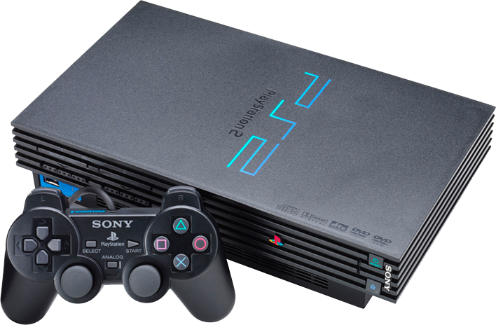

TU PS2 POR USB
¿Que es OPL?
Se trata de un programa (homebrew), que fue desarrollado para los juegos de Playstation 2 a través de USB o disco duro externo clave, desterrando los medios de CD y DVD para grabar juegos
¿Que necesito para instalarlo?
Memory card de PS2 / Pendrive mayor a 8GB
¿La consola debe estar chipeada?
La consola no necita estar chipeada, excepto por las consolas FAT
 Consolas FAT

Consolas Slim y Super Slim